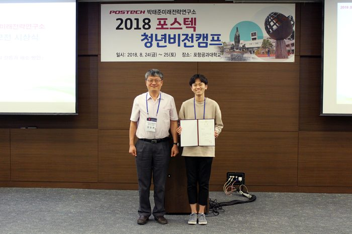

제 5회 째인 박태준미래전략연구소 대학생 및 대학원생 공모전
주제 ‘한국 사회의 갈등을 해소하기 위한 방안’
(세대 갈등, 계층 갈등, 가치관 갈등, 이념 갈등. 젠던 갈등)
최 우 수 상
「너와 대화하기 위해」 - 박준수(경희대학교)
Q. 어떤 계기로 공모전에 응모하게 되었나요?
공모전 참가 계기는 정말 우연이었습니다. 공모전 공고가 처음 나왔을 당시, 저는 지역아동센터에서 일하며 아이들과 세대 갈등을 겪고 있었습니다. 처음 복무를 시작해서 일까요. 생각처럼 초등학교 중학교 고등학교 아이들과 친해지는 것은 어려웠습니다. 20대의 저는 항상 스스로 젊은 세대 축에 들것이라고 생각했고, 아직은 10대와 의사소통이 잘 될 줄 알았습니다. 하지만, 현실은 아니었습니다.
아이들과 친해질 방법을 찾던 중, 사람이 동조하는 가장 쉬운 방법이 적대세력에 대한 비난이라는 것을 생각한 저는 단순히 재미와 호기심으로 아이들에게 ‘선생님(본인)이 꼰대일 때를 찾기’라는 숙제를 내줬습니다. 저를 욕할 수 있는 기회 좋아했던 것일까요? 아이들은 굉장히 즐겁게 숙제를 해왔습니다. 사실 제 에세이의 모든 자료는 글을 쓰기 위한 목적보다는 아이들이 제게 처음 대화를 한 내용이었습니다. 아이들과 대화하기 위해, 세대 차이라는 부분으로 꾸준히 대화했고 수업이 끝나면 신선하거나 충격적이었던 대화를 기록했습니다.
이후 공모전을 발견하게 되었고, 저는 당연히 세대 갈등에 대한 글을 쓰기 시작했습니다. 준비하는 과정 속에서 저는 단순히 아이들과 친해지기 위한 방법을 생각하다가 아이들과의 근본적인 갈등 해소를 생각하게 되었습니다. 그 과정은 단순히 아이들의 환심을 사귀 위한 대화가 아닌 아이들의 진정한 생각을 들을 수 있는 기회가 되었습니다. 그리고 그 이야기는 제가 쓴 공모전 출품작이 되었습니다.
Q. 에세이를 작성하면서 가장 중요하게 생각했던 점은 무엇이었나요?
에세이는 나만이 가지고 있는 가장 자신 있고 편한 방식의 글이라고 생각합니다. 사실 공모전의 참가 계기 자체가 아이들과의 수업 과정을 기록하는데 의의도 있었기 때문에 저는 이번 에세이는 제가 진정으로 원하는 방식대로 쓰고 싶었습니다. 과제나 논문을 쓸 때는 항상 교수님들께서 원하는 방식이나, 사회 속에서 통용되는 형식을 찾았지만, 에세이란 어떤 방식으로든 논리성만 갖출 수 있다면 좋다고 생각했습니다.
사실 에세이의 개요를 짜는데 2주가 넘는 시간이 걸렸습니다. 저만의 장점이 무엇일까를 생각해 보기도 했고, 제가 원하는 소재의 자료를 매번 읽어 보며 어떻게 조리할까도 생각해봤습니다. 결정적으로 남들이 생각하기 힘들지만, 현재 제가 가진 장점이 무엇일까 생각하다가, 제가 쓰고자 하는 글은 아이들과의 세대 갈등을 직접 겪은 경험이라는 것을 깨달았습니다.
경험이라는 무기의 장점을 최대한 활용하기 위해 저는 ‘생동감’을 주고자 했습니다. 생동감을 얻기 위해, 아이들과의 삶 속에서 나타나는 대화를 그대로 옮겨 적는 단락은 무조건적으로 들어갔으면 좋겠다고 생각을 했습니다. 그 이후는 쉬웠던 거 같습니다. 아동 센터 속에서 아이들과 저의 관계를 묘사하기 위해, 한 단락은 아이들과의 대화가 들어가고, 그 다음 단락에는 관찰자의 시점에서 아이들을 분석한 내용이 오는 방식으로 썼습니다.
Q .출품작을 준비하는데 가장 힘들었던 부분은 무엇인가요?
20대의 저는 과연 기성세대일까요? 아니면 젊은 세대일까요? 많은 사람들은 20대의 대학생을 아마 젊은 세대로 규정할 것입니다. 하지만 제가 현재 복무중인 아동센터의 아이들은 저를 기성세대로 바라보고 있었습니다. 10대 초중반인 아이들의 입장에서 20대의 선생님이 말이 안 통하는 기성세대로 느껴질 수도 있다는 소리입니다.
인간은 모두 완벽하지 않기 때문에 상대에 대해서 열등감을 가지고 살아갑니다. 특히 기성세대는 젊은 세대의 장점인 젊음을 부러워하고, 젊은 세대는 기성세대의 성취와 경험을 부러워합니다. 그렇기에 얼마나 나이차가 나든, 상대 세대와 열등감을 느낀다면, 저는 언제든지 세대 갈등이 발생 할 수 있다고 있습니다.
세대도 갈등도 절대적인 기준이 없는 상황 속에서 세대 차이는 사라 질 수 없습니다. 그리고 상대적인 두 세대는 서로에 대해서 너무 잘 알고 있지만, 서로를 배척합니다. 제가 제안하는 세대 갈등의 해결방안은 상대의 세대로 부터 배우는 게 아니라 가르치는 것입니다. 제가 10대 아이들이라는 청자를 생각하고 수업을 시작한 것은 아이들을 이해하기 시작한 것이기도 했습니다. 선생이라는 역할에서 나온 책임감이듯, 상대를 가르칠 때 그들에게 배울 수 있다고 생각합니다. 나머지 이야기는 제 글을 읽어보시면, 아실 수 있지 않을까 싶습니다. ^^
Q. 공모전이 에세이에서만 끝나지 않고 캠프에서 발표 및 토론의 시간을 갖은 후 대상과 최우수상이 선정되는데요. 이점에 대해 어떻게 생각하시나요?
청년 비전 캠프는 저에게 뜻 깊은 경험이었던 것 같습니다. 캠프 속에서 가장 인상 깊었던 프로그램은 ‘통나무 집’ 이었습니다. 다음 캠프에서도 진행될지는 모르지만, 다른 참가자 분들과 자유롭게 토론을 할 수 있는 시간은 굉장히 인상적이었습니다. 그들의 가치관과 나의 글을 빗대어 비교하면서, 제 시야를 넓일 수 있는 좋은 기회였습니다.
처음, 토론을 준비하면서, 세대 갈등이라는 문제를 너무 쉽게 생각 했을지도 모릅니다. 캠프에서 느낀 제 글의 단점이 무엇이냐고 질문하신다면, 저는 세대 갈등이라는 한국 사회의 문제를 ‘상대성’이라는 개념을 통해 모호하게 지적했다는 점입니다. 해결 방안이라는 방향성에 집착을 했기 때문에, 어떤 갈등이 정확하게 한국 사회를 해롭게 하는 문제인가를 규정 할 수 있는 기회를 놓친 것 같습니다.
가장 크게 깨닫게 된 사실은, 세상은 단순하지 않다는 점입니다. 어쩌면 저는 강박적으로 한국 사회가 갈등 속에 사로 잡혀있고, 그것을 해결해야한다고만 생각 하고 있었는지도 모릅니다. 글에서도 언급했듯, 세대 차이를 없앨 수 있는 방안은 존재하지 않습니다. 그렇다면, 세대 갈등의 발생은 당연한데 해결 ‘방안’을 찾기 위해 많은 가능성의 경우의 수들을 배제한 점도 아쉬운 점이 있었습니다.
Q. 꼭 하고 싶은 말이나 수상소감 한마디 부탁해요!
캠프 오기 전날, 아이들에게 우수상을 받았다고 밝히면서, 저에게 가장 큰 도움을 준 중학생 모두에게 피자를 사줬습니다. 사실 저희 아이들은 본인과 관련된 문제가 밖으로 나가는 것을 별로 좋아하지 않습니다. 처음 배정을 받았을 때도 사회복지사 선생님들께 수차례 들었기 때문에 제가 아이들과 관련된 글을 써서 상을 받았다는 사실 자체를 싫어하지 않을까도 걱정했습니다. 피자의 힘이었을까요? 아니면 저에게 조금 마음을 열어줬기 때문일까요? 한 아이가 선생님 “필요하시면 저희 사진이라도 찍어 가셔야 하는 거 아니에요? 기왕 나갔으면 이겨 오셔야죠!”라는 말과 함께 꼭 이기고 오라는 말을 했습니다. 수상 당시 웃기게도 그 아이의 말이 가장 먼저 생각났습니다.
